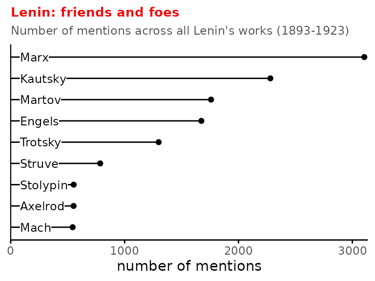
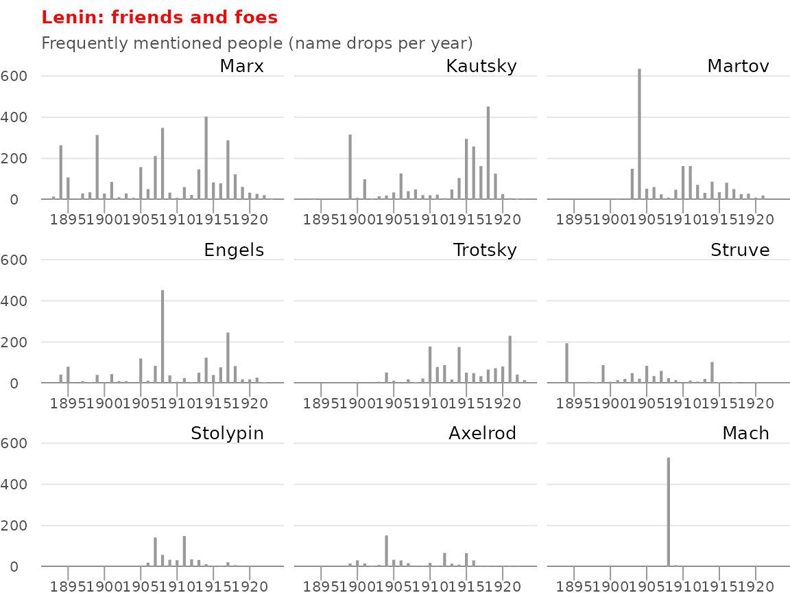

Mentions of Mencheviks
mentions.RmdA lot of Lenin’s writing takes the form of arguments against political or philosophical opponents. In The Proletarian Revolution and the Renegade Kautsky (1918), Lenin argues against Social Democrat Kautsky about the role of democracy and revolution in the transition to socialism. In The Economic Content of Narodism and the Criticism of it in Mr. Struve’s Book, dissects Peter Struve’s 1894 book, accusing it of being a liberal bourgeois distortion of Marxism. I wondered who was most frequently mentioned in Lenin’s works. (See a similar analysis I did for Marx’s Capital)
Methods
I used {spacyr}’s parsing tools to tag parts of speech. This tool uses sentence syntax structure to identify what words are verbs, nouns, adjectives, etc. I then looked for the most common words (or series of words) tagged as proper nouns. I manually classified the top hits as being associated with people, political parties, government institutions, or newspapers.
People
Unsurprisingly, Marx makes it to the top of the list, with Engels not too far behind. Lenin’s wife, Krupskaya, relates the following anecdote in her essay on how Marx shaped Lenin’s thinking:
For Lenin the teachings of Marx were a guide to action. He once used the following expression: “Who wants to consult with Marx ?” . . . It is a very characteristic expression. He himself constantly “consulted with Marx.”

Kautsky, as I mentioned above, was a Social Democrat and opponent of Bolshevism, and the target of many works by Lenin. Martov led the Mensheviks, the faction of the Russian Social Democratic Labour Party (RSDLP) that opposed the Bolsheviks during the 2nd Party Congress in 1903. Trotsky was a sometimes-opponent and sometimes-supporter of Lenin. Struve was a prominent member of the RSDLP, but became more liberal in his politics over time and opposed Lenin’s Bolsheviks. Stolypin was the prime minister of Russia from 1906-1911. Axelrod was an editor (along with Lenin) of the newspaper Iskra, and a member of the Menshevik faction. Mach was a scientist (of Mach number fame) and a philosopher.
We can also look at how these people were mentioned across Lenin’s writing.

Perhaps the most unique pattern is that of Mach; 519 of the total 544 mentions of Mach were in Materialism and Empirio-Criticism, (1908) Lenin’s longest work, in which Lenin argues against Mach’s claims that no knowledge exists outside of one’s own senses and experience. The mentions of Struve, Stolypin, Struve correspond with the timelines of their political prominence. Marx features fairly consistently throughout Lenin’s work. Kautsky and Engels also span the whole timeline of Lenin’s writing but with a few sharp peaks. The sharp spike in Engel’s timeline in the graph represents Materialism and Empirio-Criticism (409 out of 1674 mentions). The two tallest peaks for Kautsky are the aforementioned The Proletarian Revolution and the Renegade Kautsky and the 1899 pair of articles titled Capitalism in Agriculture.